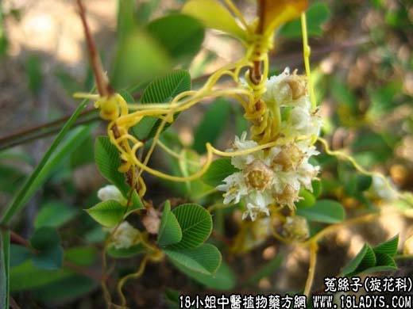

【中药概述】
菟丝子为旋花科草本植物菟丝子的成熟种子。辛、甘、平。归肝、肾经。
1.补肾前边精：用于肾虚腰膝酸软、阳痿遗精、小便频繁数、白带过多，肝肾虚弱的胎元不固等，如(五子衍宗丸)。
2.善肝明目：用于肝肾不足的视力减退，视物昏花等，常配枸杞子，菊花，车前子，青葙子，熟地，生地等。如(<千金方>驻景丸)。
3.补脾止泻：用于脾肾两虚、便溏泄泻等，如(<济生方>菟丝子丸)。
【药效鉴别】
菟丝子补肾，偏于益精，温而不燥。能补肾阳而益阴精，又可明目、止泻，故为平补肾、肝与脾的良药。
【化学成分】
含树脂样配糖体、大量淀粉酶、维生素A类物质等。
【用量用法】
9——15g，水煎服，或浸酒、入剂。
【附】盐菟丝子：具有补肾益精，养肝明目之功。能引药下行，增强补肾作用。
想了解更多关于菟丝子，还为您推荐以下内容↓↓↓↓